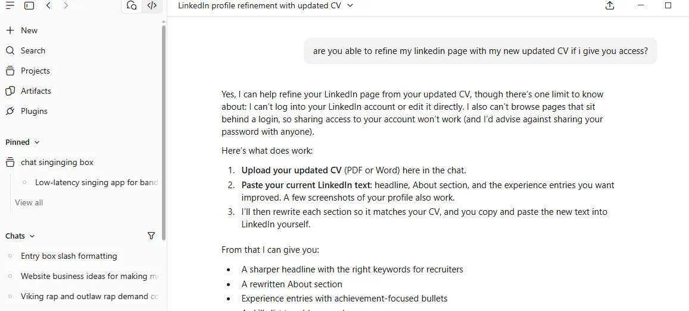
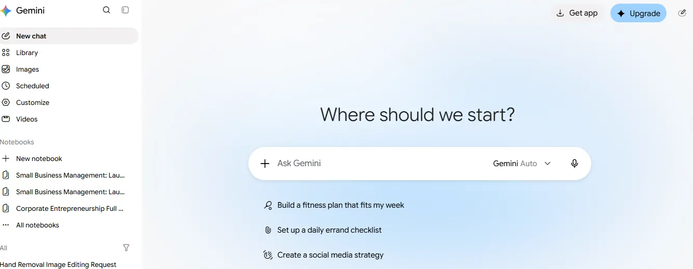
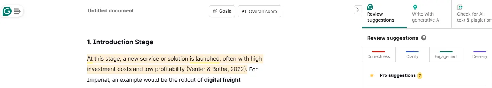
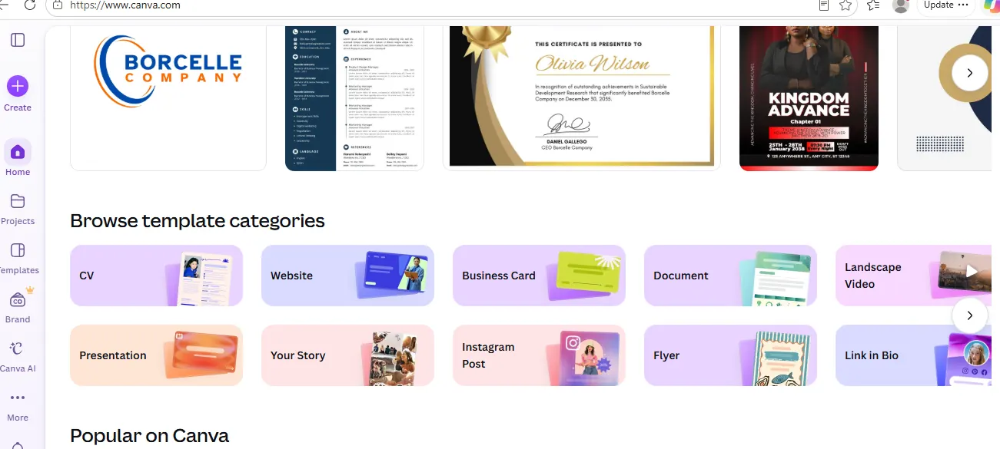
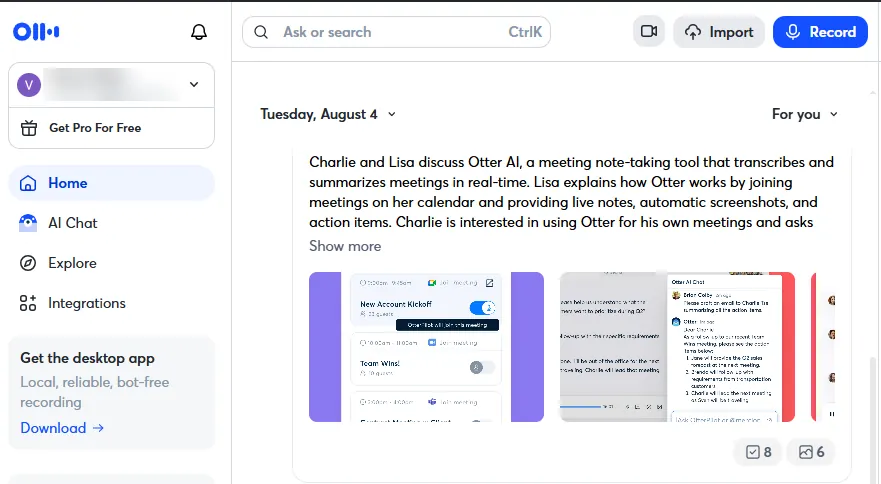

Running a small business often means switching between marketing, customer communication, research, administration and planning. AI tools can help with some of that work, but the best choice depends on the task, your budget and how much checking the output needs.
This guide brings together 12 widely used tools across several business tasks. It is not a claim that every product has been independently tested. Where the author has direct experience, that experience is labelled separately from general product descriptions.
Quick comparison: 12 AI tools for small businesses
| Tool | Useful for | Category | Personal experience in this guide? |
|---|---|---|---|
| ChatGPT | Brainstorming, writing, image creation and general assistance | AI assistant | Yes |
| Claude | Research, analysis, drafting and website work | AI assistant | Yes |
| Google Gemini | General assistance and creative image tasks | AI assistant | Yes |
| Microsoft Copilot | Assistance within supported Microsoft workflows | AI assistant | Not claimed |
| Perplexity | AI-assisted web research | Research | Not claimed |
| Grammarly | Grammar, clarity and tone suggestions | Writing | Yes |
| Canva | Graphics, presentations and social content | Design | Yes |
| Notion | Notes, documents and team knowledge | Workspace | Not claimed |
| Otter.ai | Meeting transcription and summaries | Meetings | Yes |
| Fireflies.ai | Meeting transcription and searchable notes | Meetings | Not claimed |
| Zapier | Connecting apps and automating workflows | Automation | Not claimed |
| Make | Visual, multi-step app automation | Automation | Not claimed |
How to choose the right AI tool
Start with a recurring task that takes time or creates friction. Decide what a useful result would look like, test the free access if available, and compare the limits before paying. A tool with many features is not automatically the best fit if you only need one simple job done.
- For writing and planning: look at general AI assistants and writing tools.
- For visual marketing: consider a design platform with templates and AI-assisted creation.
- For meetings: compare transcription accuracy, integrations, recording controls and consent requirements.
- For repetitive admin: map the steps first, then assess whether automation is worth setting up.
1. ChatGPT — versatile support for everyday business work
ChatGPT is a general-purpose AI assistant that can support brainstorming, drafting, summarising, analysis, coding and image-related creative workflows. For a small business, it can help develop first drafts, structure ideas, prepare content outlines and explore approaches to a problem. Always review factual claims and check whether a feature is available on your plan.

I use ChatGPT for brainstorming, content creation, image generation, rewriting CVs, website development, research and improving my writing. I find it useful for turning an initial idea into a more structured draft, visual concept or practical starting point. I still review the output, verify important facts and edit it before publishing or relying on it.
Good fit: freelancers, consultants and small teams looking for one flexible assistant across different kinds of work.
2. Claude — research, analysis and development support
Claude is an AI assistant from Anthropic that can help with writing, reasoning, coding and working through substantial information. Its usefulness depends on the task, the model and the plan available to the user.


I use Claude for market and competitor research, brainstorming, website development and design-related work. I particularly value it for deeper research and analysis when I need to explore a topic carefully, compare options or organise complex information. Claude Design has also been useful in my design workflow. I treat its output as a starting point and verify important claims.
Good fit: people doing research-heavy work, analysis, planning, writing or website development.
3. Google Gemini — a multi-purpose assistant
Google Gemini can assist with questions, idea development and supported creative tasks. Its available capabilities and usage limits can vary by account, region and plan.

My experience with Gemini is that it is a versatile assistant with a familiar range of uses, much like ChatGPT. I have used it for general tasks and to generate images and design artwork for YouTube thumbnails and flyers. I often find its responses comprehensive, although the quality and level of detail can vary depending on the prompt and task. I recommend giving it a clear brief and refining the result rather than accepting the first output automatically.
Good fit: creators and small businesses looking for a general assistant and support with visual ideas.
4. Microsoft Copilot — support for Microsoft-centred workflows
Microsoft Copilot offers AI assistance through its chat experience and supported Microsoft products. The exact features available depend on the product, account type, subscription and organisation settings. Check Microsoft's current plan details before choosing it for a business workflow.
Good fit: businesses already using Microsoft tools that want AI assistance within compatible workflows.
5. Perplexity — AI-assisted research and discovery
Perplexity is designed around answering questions with links to supporting web sources. It can be a useful starting point when exploring a market, gathering source material or learning about an unfamiliar topic. Follow the citations and check the original sources; a linked answer is not automatically correct or complete.
Good fit: business owners who regularly research topics and want a convenient route to source material.
6. Grammarly — a writing companion
Grammarly provides writing suggestions intended to help with spelling, grammar, clarity and tone. Its available features depend on the product and plan.

Grammarly is a useful writing companion in my workflow. I use it for spelling and grammar checks and to improve writing for different audiences. I find its suggestions helpful for adjusting clarity, tone and wording while keeping the intended voice in mind. Its ability to work across writing environments is convenient when composing in different apps. I still review its suggestions so the final text sounds like me and preserves my intended meaning.
Good fit: anyone who writes regularly for work, study, clients or public communication.
7. Canva — accessible visual content creation
Canva is a visual communication platform with templates and AI-assisted features for creating designs and content. It can support social graphics, presentations, flyers, documents and other common marketing materials.

Canva is my go-to tool for creating visual content for different platforms. I use it for artwork, flyers, banners, social media graphics and short videos, as well as practical documents such as CVs and planners. I also use Canva's AI-assisted features to help turn prompts and ideas into design starting points. What I value most is having a wide range of design tasks in one place, without needing to start every project from scratch.
Good fit: small businesses, creators and freelancers who need to produce a variety of visual materials.
8. Notion — organising business knowledge and projects
Notion combines notes, documents, databases and project organisation in a flexible workspace. Teams can use it to keep procedures, plans and reference material together. AI capabilities and limits should be checked against the current plan.
Good fit: small teams that want a shared place for documentation, planning and internal knowledge.
9. Otter.ai — meeting transcription and summaries
Otter.ai is a meeting assistant designed to capture conversations and produce transcripts, notes and summaries. Check meeting platform compatibility, plan limits and recording settings before relying on it for important meetings.

I use Otter.ai as a virtual meeting assistant. It can join meetings and help capture what was discussed through transcripts and meeting notes. I find the summaries and follow-up notes useful because they reduce the amount of manual note-taking I need to do after a meeting. Recording and capture options can differ by meeting setup and plan, so check the current settings and obtain any required consent before recording.
Good fit: consultants, remote teams and professionals who attend frequent online meetings and need searchable notes and summaries.
10. Fireflies.ai — searchable meeting records
Fireflies.ai is another AI meeting assistant focused on transcription, summaries and organising meeting information. Compare its integrations, language support, recording controls and plan limits with your meeting needs.
Good fit: teams that want meeting conversations converted into searchable notes and follow-up material.
11. Zapier — connecting apps and automating tasks
Zapier connects supported apps so that an event in one service can trigger an action in another. A small business might use an automation to move form responses into a spreadsheet or notify a team when a new enquiry arrives. Check task limits, app availability and paid-plan requirements before building a critical workflow.
Good fit: business owners who repeat the same steps across several online services.
12. Make — visual workflow automation
Make provides a visual environment for connecting apps and building multi-step workflows. It can be useful when a process involves several steps or conditional routes. Start with a low-risk workflow, test it carefully and monitor failures before depending on it for important operations.
Good fit: people who want to map and automate multi-step processes visually.
Privacy and responsible use
Before putting business information into an AI service, check its privacy terms, data controls and your organisation's requirements. Avoid entering passwords, confidential client information, sensitive personal data or commercially sensitive material unless you have confirmed that the tool and your settings are appropriate for that use.
AI-generated text, images, summaries and research can contain errors. Verify important claims, review generated designs and ensure you have the rights and permissions needed for material you publish. For meeting assistants, tell participants when recording or transcription is taking place and follow applicable consent rules.
Frequently asked questions
What is the best AI tool for a small business?
There is no single best option for every business. Choose according to the task: a general assistant for drafting and brainstorming, a design tool for visual content, a meeting assistant for transcripts, or an automation platform for repetitive workflows.
Can small businesses start with free AI tools?
Many providers offer free access or trials, but features, usage limits and eligibility change. Check the provider's current official pricing and terms before making a decision.
Should I use AI-generated content without checking it?
No. Review facts, names, figures, tone, copyright and confidential information before publishing or using AI-generated work in business decisions.
Are these tools independently tested?
This guide combines public product information with clearly labelled personal experience for selected tools. It is not a controlled benchmark of all 12 products, and we do not claim hands-on testing where it has not taken place.